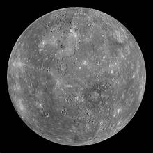

Mercury is the closest planet to the Sun and due to its proximity it is not easily seen except during twilight. For every two orbits of the Sun, Mercury completes three rotations about its axis and up until 1965 it was thought that the same side of Mercury constantly faced the Sun. Thirteen times a century Mercury can be observed from the Earth passing across the face of the Sun in an event called a transit, the next will occur on the 9th May 2016.
